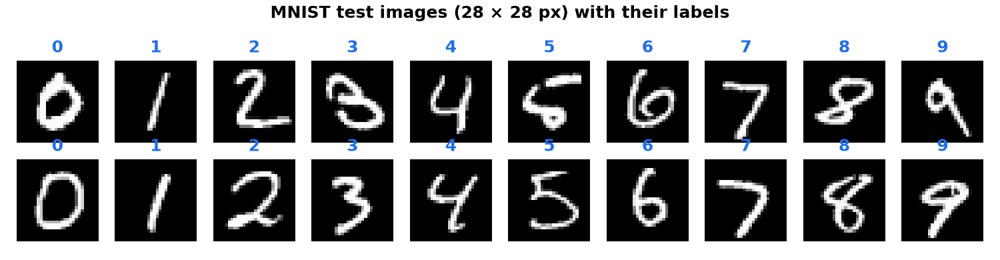
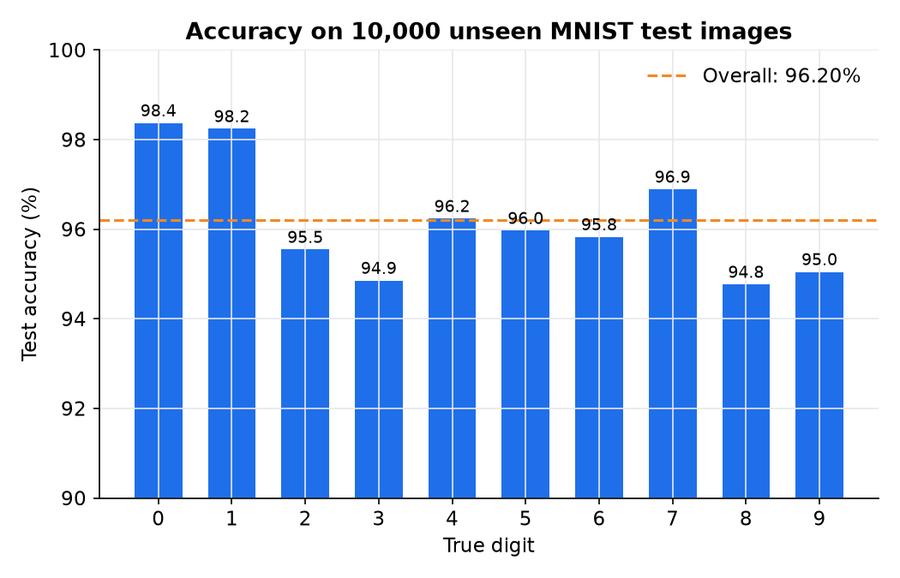
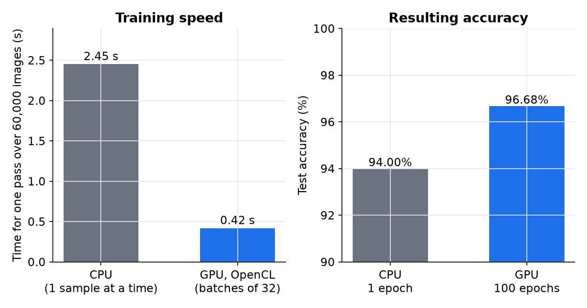

Personal project
Handwritten Digit Classifier

Overview
A multi-layer perceptron that predicts and classifies handwritten digits from 0 to 9. The network was trained on the MNIST database, written in Rust from scratch and hardware-accelerated using OpenCL. The saved 784 → 30 → 10 network, which holds 23,860 learned weights and biases, correctly classifies 96.2% of the 10,000 test images it never saw during training.
What I did
- Implemented the multi-layer perceptron in Rust: Xavier initialisation, a ReLU hidden layer, a softmax output and a cross-entropy loss.
- Derived the backpropagation gradients by hand, including the softmax and cross-entropy derivatives, and wrote them up alongside the code.
- Wrote a CPU trainer that updates the weights after every sample (stochastic gradient descent).
- Wrote OpenCL kernels for the forward pass, backpropagation and weight updates, so the GPU trains a whole batch of 32 samples in parallel. The dataset is uploaded to the GPU once and the network is only read back at the end.
- Added unit tests that check the GPU trainer produces the same gradients as the CPU trainer, plus a binary archive format for saving and loading trained networks.
- Built loaders for the MNIST files and for ordinary images, so the network can classify my own drawings.
What I learned
Writing every step myself, from the gradient derivation to the GPU kernels, showed me exactly what a neural network library hides. Parallelism paid off even on an integrated AMD GPU: one pass over the 60,000 training images took about 0.42 s on the GPU against 2.45 s for the single-threaded CPU trainer, which made it practical to train for 100 epochs in about 43 s. That longer training lifted test accuracy from 94.0% after one CPU pass to 96.7%. A small network still has clear weak spots: 0 and 1 are recognised over 98% of the time, while 3, 8 and 9 sit near 95%. Checking the GPU against the simpler CPU trainer in unit tests was what made the faster code trustworthy.
Gallery

